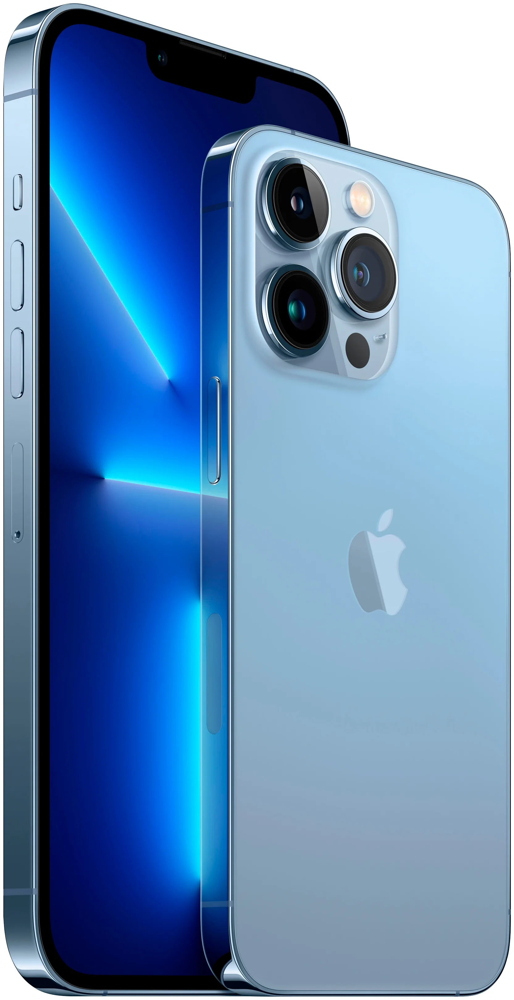
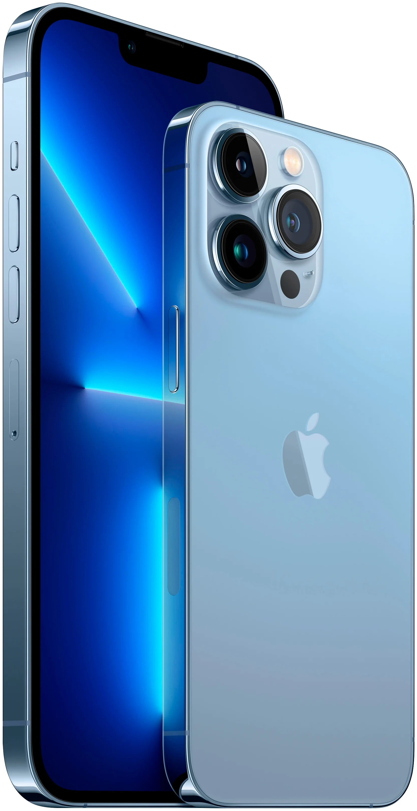

Cмартфон Apple iPhone 13
Цена 75 990₽ 67 990₽
Цвет товара: Синий


Конфигурация памяти: 128 ГБ
Характеристики товара
- Экран: 6.1
- Встроенная память: 128 ГБ
- Операционная система: IOS 15
- Беспроводные интерфейсы:NFC, Bluetooth, Wi-Fi
- Процессор:Apple A15 Bionic
- Вес: 173 г
Описание
Наша самая совершенная система двух камер.
Особый взгляд на прочность дисплея.
Чип, с которым всё супербыстро.
Аккумулятор держится заметно дольше.
iPhone 13 - сильный мира всего.
Мы разработали совершенно новую схему расположения и развернули объективы на 45 градусов. Благодаря этому внутри корпуса поместилась наша лучшая система двух камер с увеличенной матрицей широкоугольной камеры. Кроме того, мы освободили место для системы оптической стабилизации изображения сдвигом матрицы. И повысили скорость работы матрицы на сверхширокоугольной камере. Новая сверхширокоугольная камера видит больше деталей в тёмных областях снимков. Новая широкоугольная камера улавливает на 47% больше света для более качественных фотографий и видео.
Новая оптическая стабилизация со сдвигом матрицы обеспечит чёткие кадры даже в неустойчивом положении.
Режим «Киноэффект» автоматически добавляет великолепные эффекты перемещения фокуса и изменения резкости. Просто начните запись видео. Режим «Киноэффект» будет удерживать фокус на объекте съёмки, создавая красивый эффект размытия вокруг него. Режим «Киноэффект» распознаёт, когда нужно перевести фокус на другого человека или объект, который появился в кадре. Теперь ваши видео будут смотреться как настоящее кино.
Отзывы

Марк Г.
Опыт использования: менее месяца
Достоинства:
это мой первый айфон после после огромного количества телефонов на андроиде. всё плавно, чётко и красиво. довольно шустрое устройство. камера весьма неплохая, ширик тоже на высоте.
Недостатки:
к самому устройству мало имеет отношение, но перенос данных с андроида - адская вещь) а если нужно переносить фото с компа, то это только через itunes, который урезает качество фотографий исходное

Валерий Коваленко
Опыт использования: менее месяца
Достоинства:
OLED экран, Дизайн, Система камер, Шустрый А15, Заряд держит долго
Недостатки:
Плохая ремонтопригодность